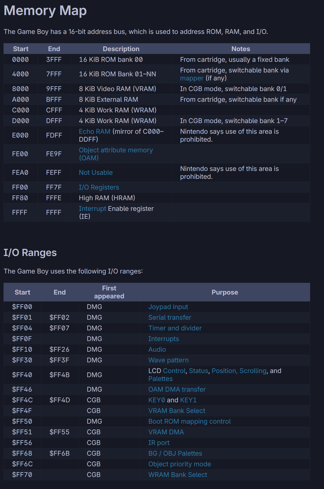
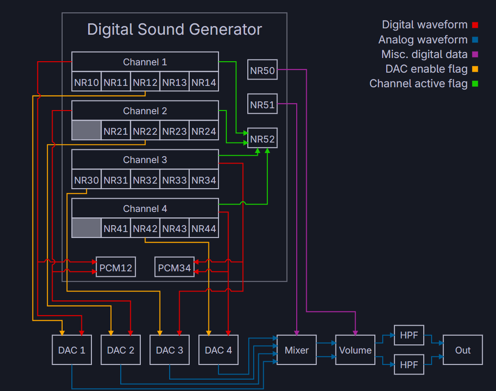

This project was developed for the Targeting Platforms module and involved creating a complete brick breaker game for the Nintendo Game Boy using Assembly language and the RGBDS toolchain.
The goal of the project was to explore low-level hardware programming by interacting directly with the Game Boy's graphics, input, audio, and memory systems without the abstraction provided by modern game engines.
Unlike my usual work in Unity and C#, every system had to be implemented by directly reading and writing hardware registers, requiring a detailed understanding of how the platform operates internally.
The final game includes a complete gameplay loop featuring a title screen, gameplay state, score tracking, collision detection, audio playback, and game over functionality.
The player controls a paddle using the Game Boy's joypad input and must keep the ball in play while destroying blocks to increase their score.
Additional features implemented beyond the original tutorial foundation include:
The project was written entirely in Game Boy Assembly using RGBDS and targets the Sharp LR35902 processor used by the original hardware.
Input is read directly from the Game Boy's joypad register, allowing the player to move the paddle and control menu interactions. Rather than using a framework or engine input system, button states are read and processed manually each frame.
Graphics are implemented using the Game Boy's tile and sprite hardware. Tile data is loaded into VRAM and arranged using tile maps to create the title screen, gameplay screen, and game over screen. Sprite data is loaded into OAM and updated every frame to control the paddle and ball positions.
The audio system was implemented using the Game Boy's four hardware sound channels. Background music is generated through channels 2 and 3 using stored note frequency and duration data, while channels 1 and 4 are reserved for sound effects. Separating music and sound effects across channels prevents register conflicts and allows multiple sounds to play simultaneously.
Collision detection, score tracking, ball movement, and game state transitions were all implemented manually using Assembly code and direct memory manipulation.


One of the most interesting aspects of the project was working within the limitations of the original Game Boy hardware.
The platform provides only 8KB of VRAM and 8KB of internal RAM, requiring careful memory usage throughout development. Graphics are limited to tile-based rendering and a maximum of forty sprites, with only ten sprites visible on a single scanline.
The graphics system also requires certain operations to occur during the Vertical Blank (VBlank) period. Tasks such as modifying VRAM or changing display states must be carefully timed to avoid graphical corruption and hardware issues.
Audio is similarly constrained, with only four sound channels available. This required careful planning of music and sound effect playback to ensure channels were not overwritten unexpectedly.
The largest challenge was adapting to low-level development compared to modern engines such as Unity.
Systems that would normally require only a few lines of C# often required direct manipulation of memory addresses and hardware registers. This significantly increased implementation complexity and required extensive research into the Game Boy hardware architecture.
Debugging was also considerably more difficult than in modern environments. Rather than relying on engine debugging tools and console output, issues had to be diagnosed through emulator debugging tools, memory viewers, and careful inspection of hardware state.
This project significantly improved my understanding of low-level programming, memory management, and hardware architecture.
Working directly with the Game Boy's hardware provided valuable insight into how modern engines abstract graphics, audio, input, and memory systems. It also reinforced the importance of writing efficient code when operating within strict hardware limitations.
The final result is a fully playable Game Boy brick breaker game featuring custom graphics, audio, scoring, and game state systems running on original Game Boy hardware specifications.
The project successfully met the module objectives while providing practical experience in low-level programming and hardware-focused development that differs significantly from modern game engine workflows.